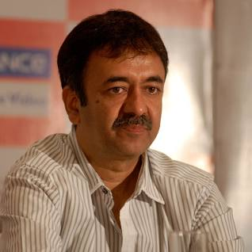
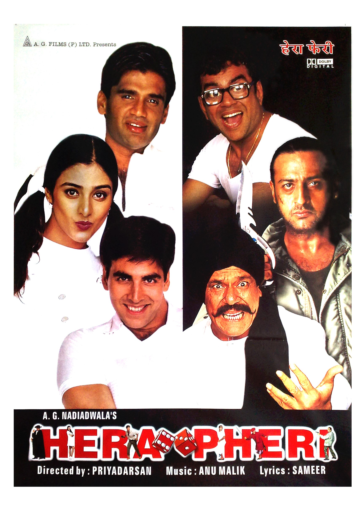
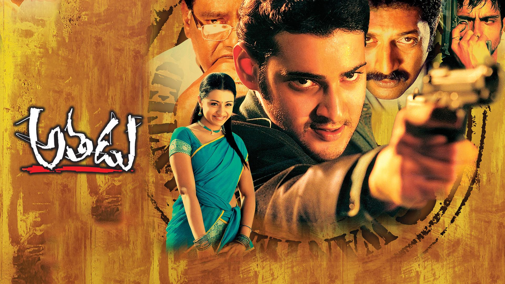
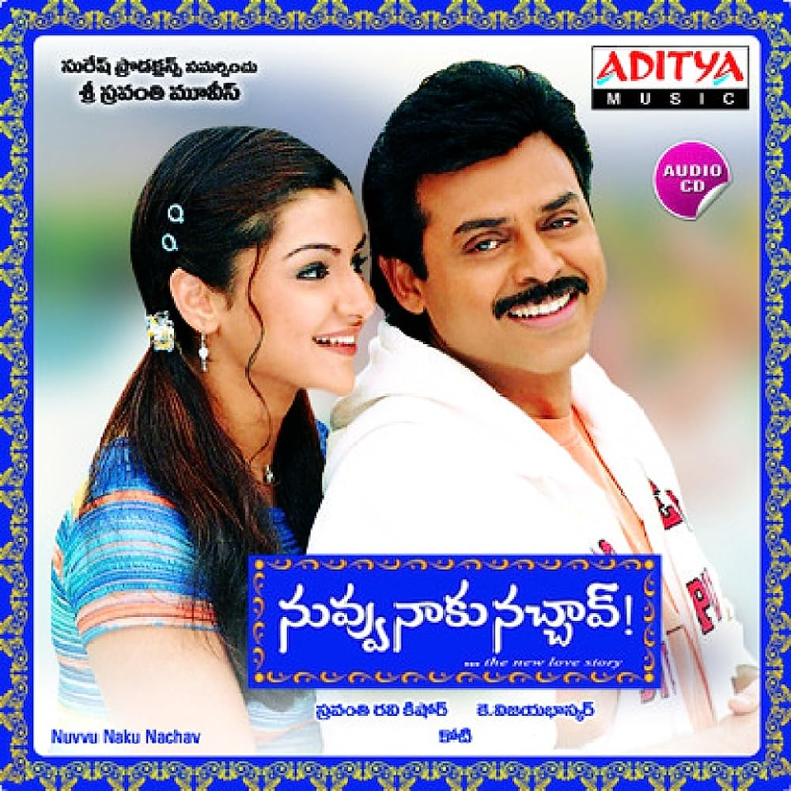

Title
Director
Genre
Two friends are searching for their long lost companion. They revisit their college days and recall the memories of their friend who inspired them to think differently, even as the rest of the world called them "idiots".Read more

Rajkumar Hirani is an Indian film director and editor. Hirani has directed five Hindi films, including Munna Bhai M.B.B.S., Lage Raho Munnabhai, 3 Idiots, PK and Sanju, and all of which have been commercial and critical successes.

Here's a comedy scene from the movie
The strory is about three unemployed men look for answers to all their money problems - but when their opportunity arrives, will they know what to do with it?Read more

Priyadarshan is an Indian film director and screenwriter. He has worked in the Hindi and Malayalam film industry for almost 40 years and has directed over 90 films.
Here's a comedy scene from Hera pheri
The story about a gunman who was hired and is framed for murder, and assumes a dead man's identity while hiding from the police.Read more
Trivikram Srinivas is an Indian screenwriter and director famous for his works in Telugu Cinema. Hailed by his admirers as "Guruji" and "Maatala Maanthrikudu" or the "Wizard of Words", he is famous for his witty and thought provoking dialogues.

Here's an intense scene from the movie
The story is about Venkateswarlu, aka Venky, comes Hyderabad to his father's friend's house where he meets an engaged girl . Things turn upside down when she expresses her love for him .Read more
Vijay K. Bhaskar is known for Malliswari (2004), Jilebi (2023) and Nuvvu Naaku Nachchav (2001).
Here is the trailer of the movie
The story is about a struggling salesman takes custody of his son as he's poised to begin a life-changing professional career.Read more

He is a director and writer, known for Seven Pounds (2008) and The Pursuit of Happyness (2006).
Here's an emotional scene from the movie